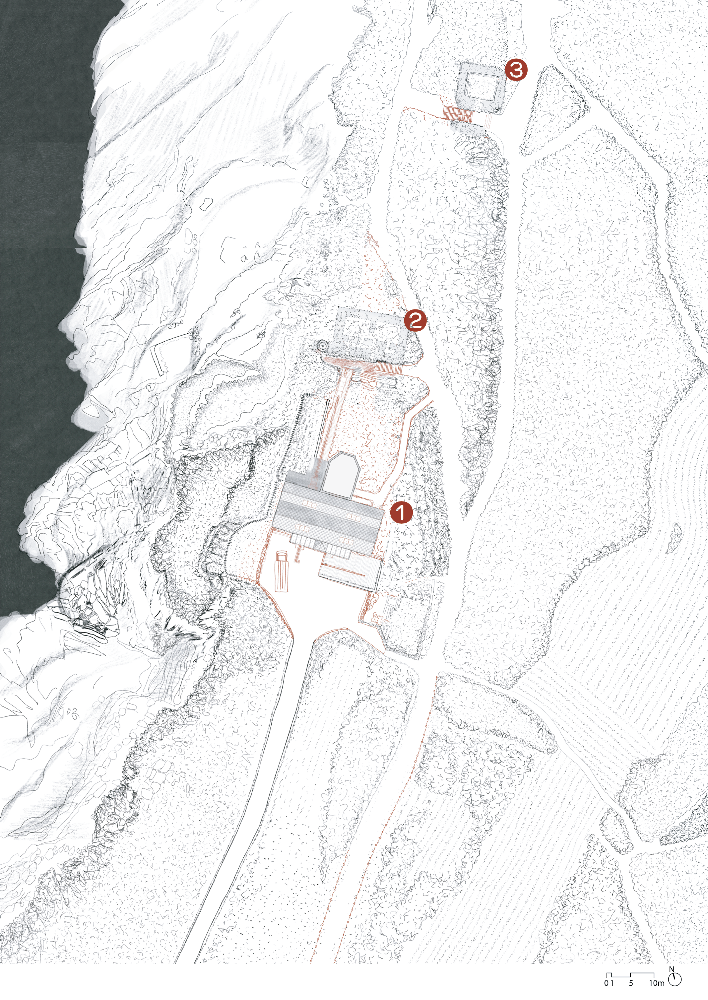
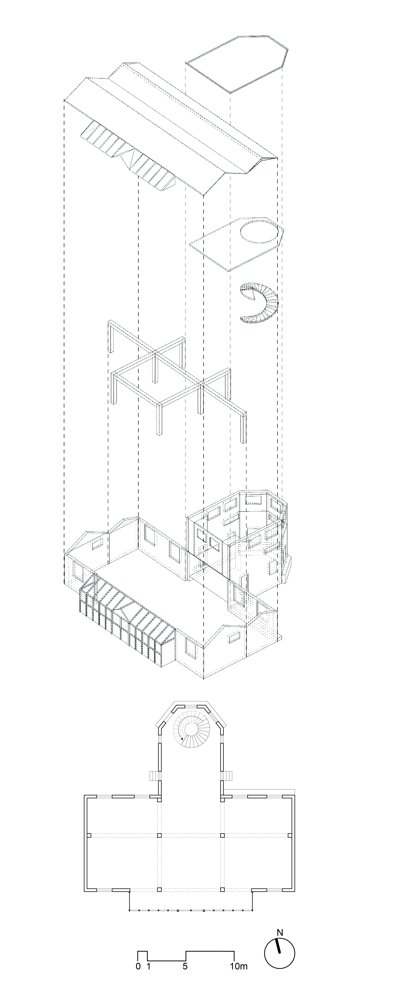
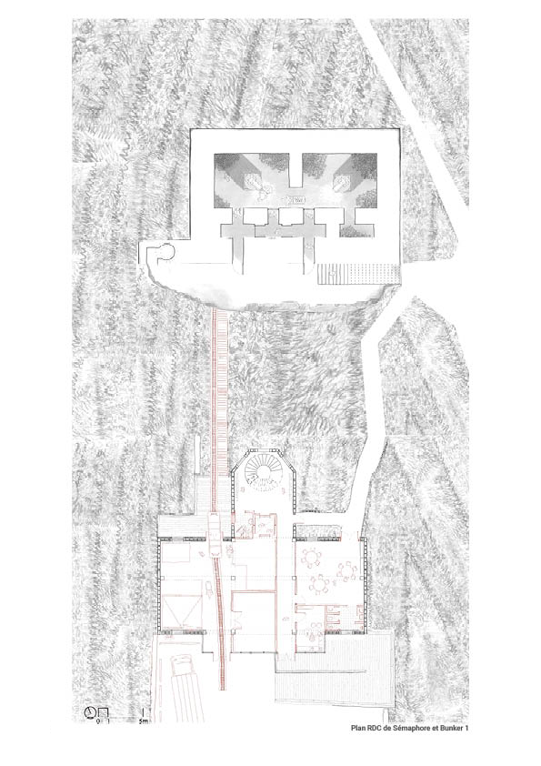
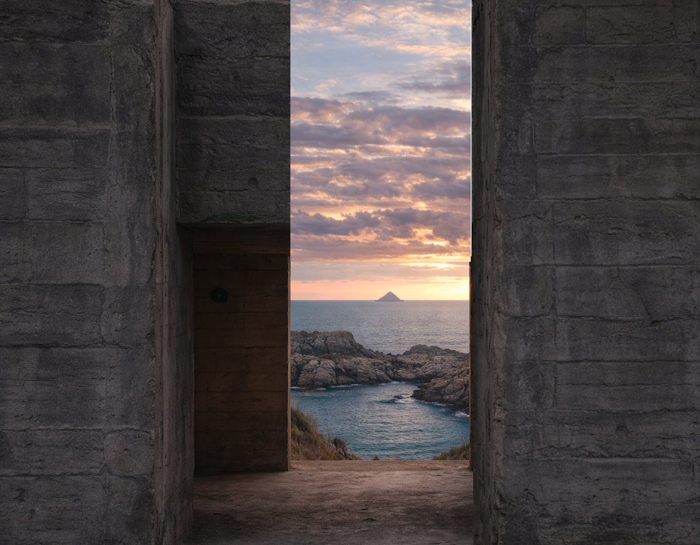
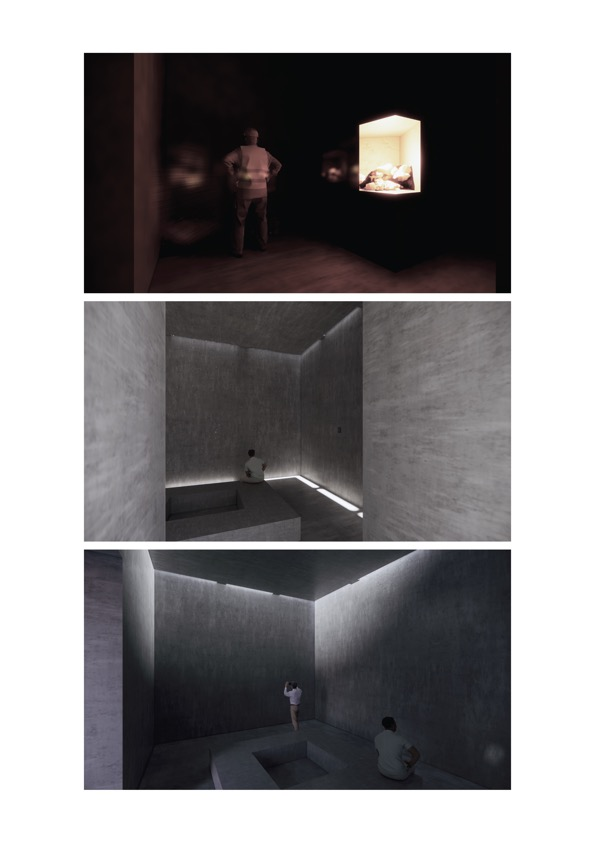
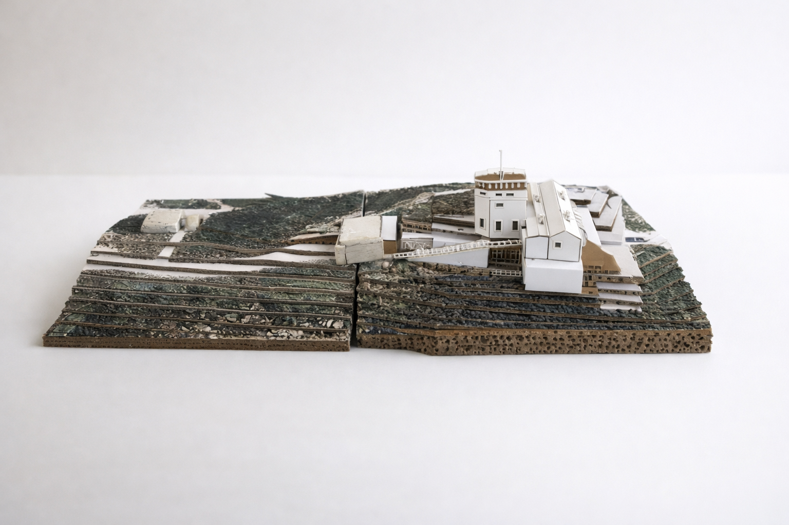

Entre mer et mémoire
Projet de fin d’études — Réhabilitation du sémaphore
et des bunkers de la Pointe du Grouin, Cancale
Située à l’extrémité de la côte d’Émeraude, la Pointe du Grouin est un site naturel remarquable, à la fois protégé et fortement fréquenté. Ancien poste de surveillance militaire, le sémaphore et les bunkers qui y subsistent témoignent d’un passé stratégique aujourd’hui désaffecté.
Ce projet de fin d’études propose une relecture architecturale de ces vestiges, en transformant un lieu de contrôle en un espace d’accueil, de création et de médiation. L’intervention s’appuie exclusivement sur les structures existantes, afin de limiter l’impact sur un paysage fragile et classé.
Entre approche rationnelle et dimension sensible, le projet assume une part de projection et de rêverie, où l’architecture devient un médiateur entre la mer, la mémoire et l’imaginaire.







Revêtement des écailles
SE100

Revêtement des écailles
SE75

Béton en poudre
de coquille d’huître

Béton en poudre
de coquille d’huître

